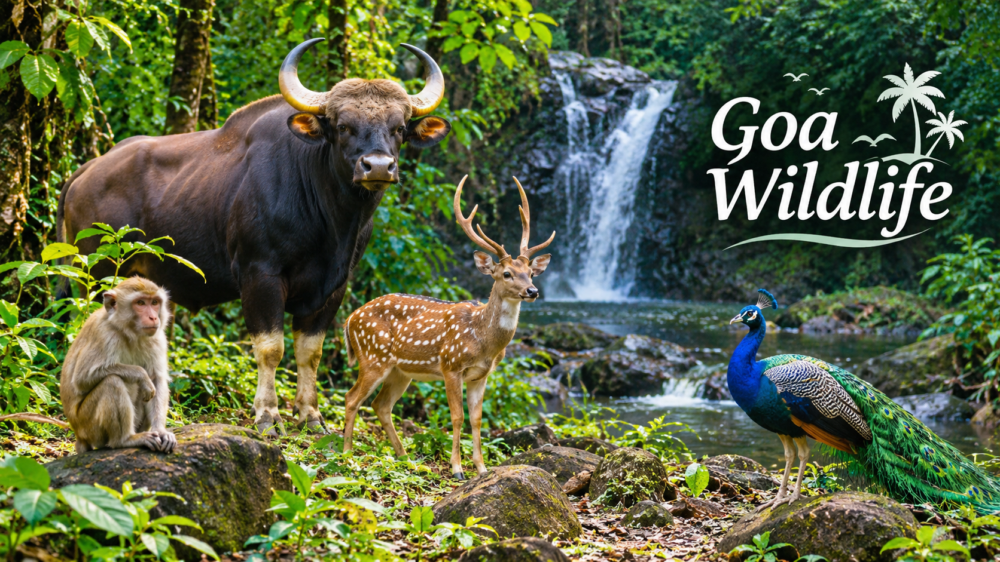

Goa is famous for its beautiful forests, rivers, and rich wildlife. The state is home to many animals and birds, including deer, monkeys, peacocks, and the Indian gaur.
Bhagwan Mahavir Wildlife Sanctuary and Mollem National Park are important natural habitats in Goa.Also Bondla wildlife Sanctuary .
